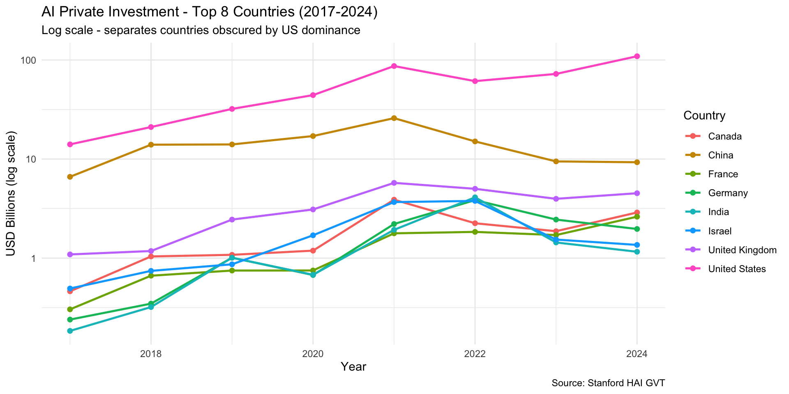
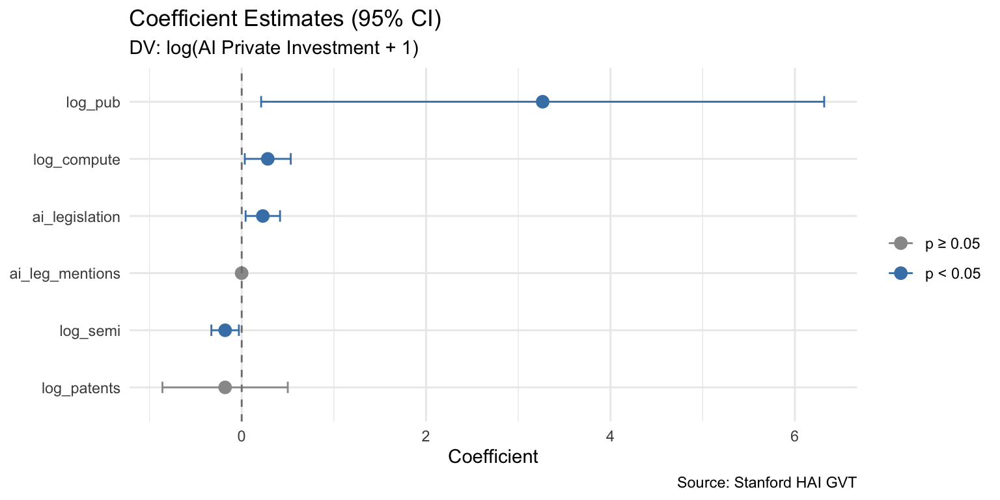
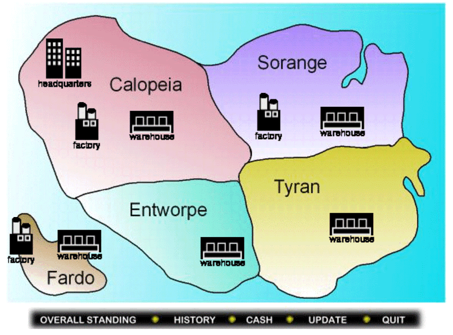
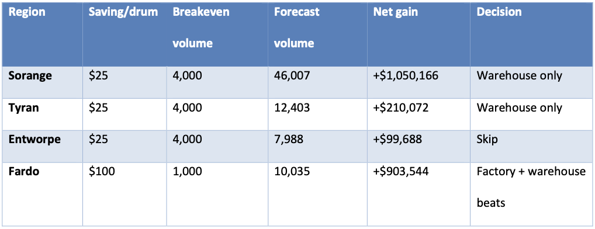
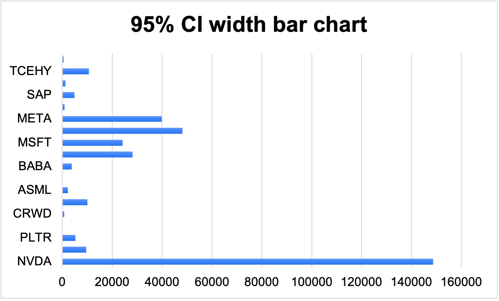
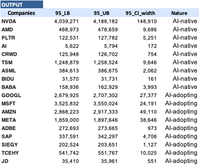
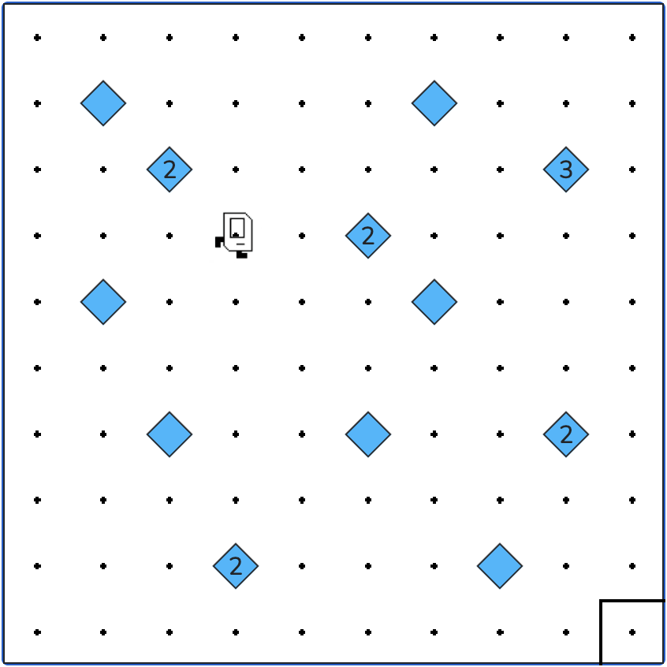
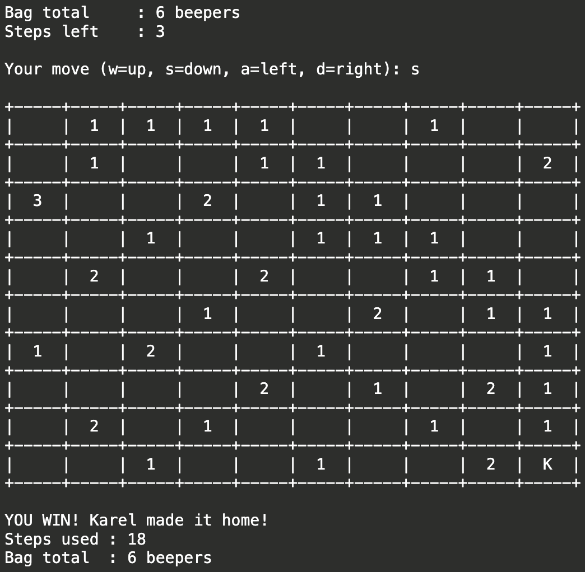

Hello, I'm Linh Nguyen
Business Analyst | FP&A Analyst | Product Analyst | Supply Chain / Operations Analyst
Business Analytics professional with banking, risk, and analytics experience in retail banking. Combines quantitative modeling with hands-on operational execution to drive measurable process, adoption, and revenue improvements.
About Me

A bit about my journey...
I started out as a finance undergrad who loved sitting with numbers — building models, testing formulas, optimizing results until they made sense. That instinct followed me to Standard Chartered, where an internship turned into a Management Trainee offer, and later a promotion to Product Specialist. Two years in, I understood how a real product — and the people behind it — actually operate. But somewhere between loyalty program redesigns and biometric feature launches, I realized what excited me most wasn't the execution, it was the optimization behind it: the patterns, the processes, the "what if we did this differently?"
That curiosity brought me from Ho Chi Minh City to UC Riverside for my MSBA, where I've gone deeper into statistics, simulation, and forecasting. The transition wasn't easy, but it confirmed what I suspected — I'm energized by messy, ambiguous problems, and I'll work until I find the insight that moves the needle. What drives me isn't just producing reports or running models. It's being the analyst who makes data actionable, walks into a room, and helps teams make confident, well-optimized decisions.
What Drives Me
Problem Solving
I love tackling complex challenges and finding innovative solutions through data analysis
Data-Driven Thinking
I believe in making informed decisions backed by solid data and rigorous analysis
Continuous Learning
The field of analytics is ever-evolving, and I'm committed to staying at the forefront
Collaboration
Great insights come from diverse perspectives working together towards common goals
Experience

Grader, Summer Session
University of California, Riverside, School of Business
- Built an Excel template auto-updating grading statistics, cutting summary processing time 50%; manually flagged recurring errors from structured grading notes, which declined over the course.
- Graded homework sets, a midterm, and a final per course for 110 students across two MSBA courses; delivered grades at ~8-hour turnaround per batch, ~95% accuracy.

Product Specialist, Priority Banking
Standard Chartered Bank
- Co-led end-to-end redesign of a loyalty program serving 400+ customers, using Excel to benchmark 5+ institutions and analyze historical client data; drove a 10% increase in Tier One enrollment within Q1 of launch.
- Directed vendor relationships through the platform launch, tracking deliverables and supplier KPIs via Excel dashboards; grew customer engagement 20% and reached 95% client satisfaction on timely support.
Management Trainee, Retail Banking
Standard Chartered Bank
- Analyzed workflows to translate 2 government mandates into action — client biometric updates and biometric authentication on select transactions — meeting the regulatory compliance deadline.
- Defined business requirements and designed 100+ test scenarios to validate new system implementations, covering 80% of scenarios encountered during real-world testing before launch.
- Tracked operational KPIs and resolved cross-functional issues post-launch, driving 90% adoption of a new digital platform feature within one month of release.
Loan Underwriting Intern
Chailease International Leasing
- Evaluated and processed 30+ SME loan applications (~$10K per case); organized applicant data into structured databases for credit assessment, with ~80% of files advancing to decision/funding without major rework.
Credit Risk Intern, Retail Banking
Standard Chartered Bank
- Reorganized 200+ manually input client records and developed a reusable Excel template (VLOOKUP, conditional logic) based on common terms/signals, cutting processing time by 10x.
Projects
Capstone — Structural Drivers of AI Private Investment
Led panel-data analysis of AI private investment drivers across 30 countries (2017–2024) using  R; developed a country fixed-effects model explaining 74% of variation and identifying 3 significant drivers.
R; developed a country fixed-effects model explaining 74% of variation and identifying 3 significant drivers.


R
Panel Data
Fixed Effects
Business Analytics
Supply Chain Cost & Inventory Simulation
Constructed demand-forecasting and inventory-policy models in Excel across 5 regions (~111K drums, 730 days) to guide purchasing and spend optimization, achieving #1 class ranking by profit.


Monte Carlo Simulation — AI Company Risk Prediction
Ran a 1,000-iteration Monte Carlo simulation in Excel to quantify valuation risk across 18 public AI companies using 5 years of SEC filings, flagging 9 AI-native companies as higher-risk.


Beeper or Bust
Built a turn-based terminal puzzle game in  Python on a 10×10 grid under dual constraints (beeper inventory, 20-step limit), implementing movement, boundary validation, and win/lose logic for Code in Place (Stanford University).
Python on a 10×10 grid under dual constraints (beeper inventory, 20-step limit), implementing movement, boundary validation, and win/lose logic for Code in Place (Stanford University).


Python
Game Logic
Algorithms
Code in Place
Education
Master of Science in Business Analytics (MSBA)
University of California, Riverside, School of Business
Riverside, California
GPA: 3.90/4.00 (Current)
Pursuing advanced studies in business analytics with a Supply Chain Management concentration, focused on data-driven decision making, forecasting, and simulation.
Achievements & Honors
- Merit Scholarship
- Beta Gamma Sigma
- Supply Chain Management concentration
Relevant Coursework

Bachelor of Finance & Banking
University of Economics Ho Chi Minh City
Ho Chi Minh City, Vietnam
GPA: 3.77/4.00
Built a strong foundation in finance and banking with coursework in analytics, statistics, and business fundamentals.
Achievements & Honors
- Outstanding Academic & Extracurricular Excellence Scholarship
- UEH500 Excellent Assignment Award
Skills
Software
RPython Google Workspace
Google Workspace AI tools (ChatGPT, Claude, Cursor)
AI tools (ChatGPT, Claude, Cursor)